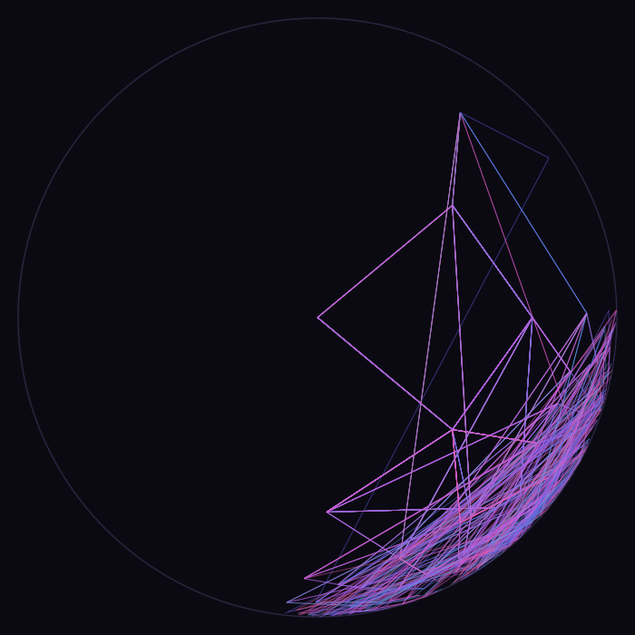

random walks in {5,4}
120 short random walks on the Cayley graph of the (5,4) triangle group, drawn in the Poincaré disk. each step is a random move to one of the four neighbours of a pentagon cell; the walk lifts to a point in the hyperbolic plane and gets projected down.

the walks start at the centre and wander out. in hyperbolic space a random walk drifts to the boundary almost surely, so longer walks cling to the rim — these are cut short so the middle fills in.